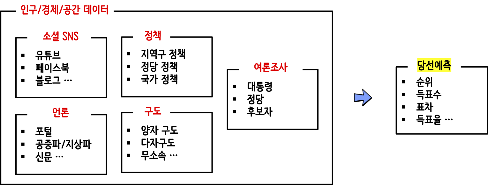

대한민국 제21대 국회의원 선거  거시 선거 데이터 경제/인구 인구 변화 시도별 인구 변화 성남시 인구 변화: 시각화 경제지형 변화 지역내총생산(GRDP) 세대별 미디어 온라인 환경 변화 직업과 세금 한국 고용 직업분류 탐색적 직업 데이터 분석 국세 세금 데이터 분석 미시 선거 데이터 지지율 대통령 지지율 정당 지지율 선거구별 지지율 데이터 선거구별 지지율: 판세분석 (2020-03-31) - 선거구별 지지율 여론조사 출마자 신상정보 여론조사 선거구 여론조사기관: 2020-03-20 정책(policy) 정당정책 매니페스토: 국회의원평가 SNS/소셜→데이터 가져오기: SNS 참고 정치지형 변화 성남시 분당구 성남시 분당구 - 데이터/지도 성남시 분당구 - 공간정도 시각화 성남시 분당구 - 공간정보 공간정보 지방자치단체 - 공간정보 성남시 - 시청과 3구청 성남시 - 분당구와 행정동 제20대 선거구 통계청행정동경계 재보선 2019 선거 데이터 - 작업중 대선, 총선, 지선 작업중 창원시 성산구 보궐선거구 총선 선거구(precinct): 19~21대 구글 일정